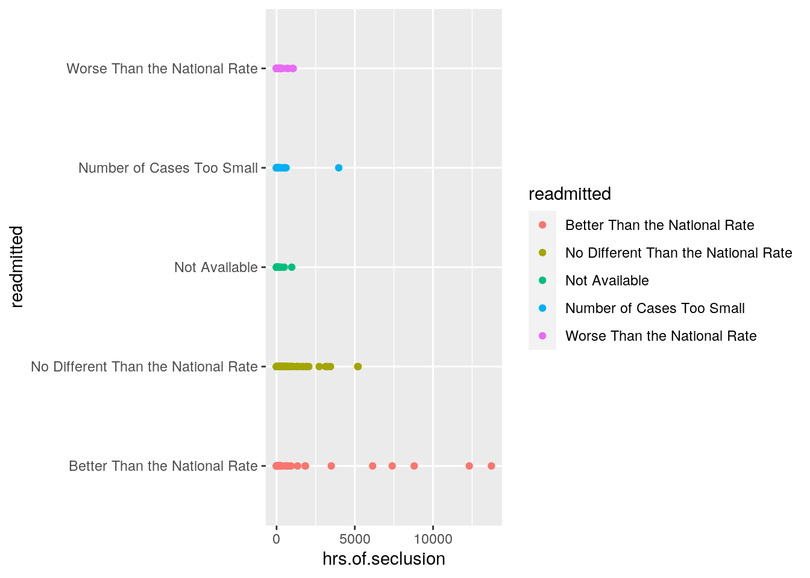
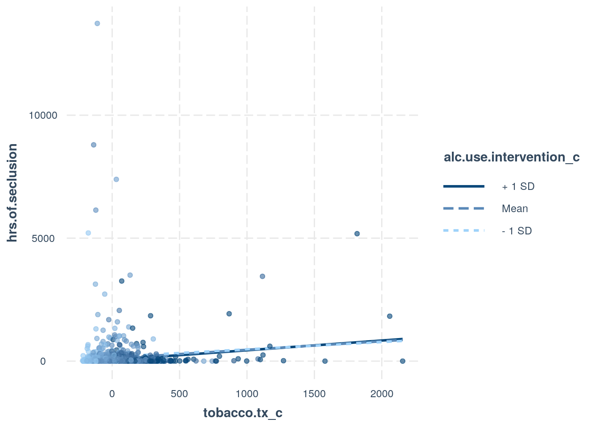
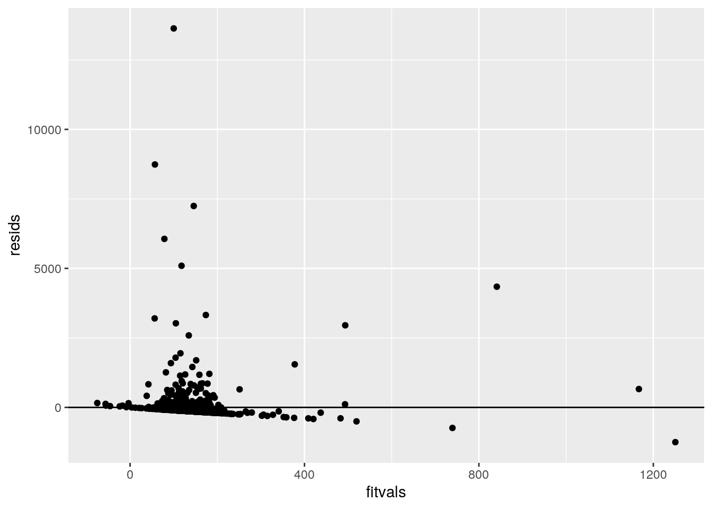
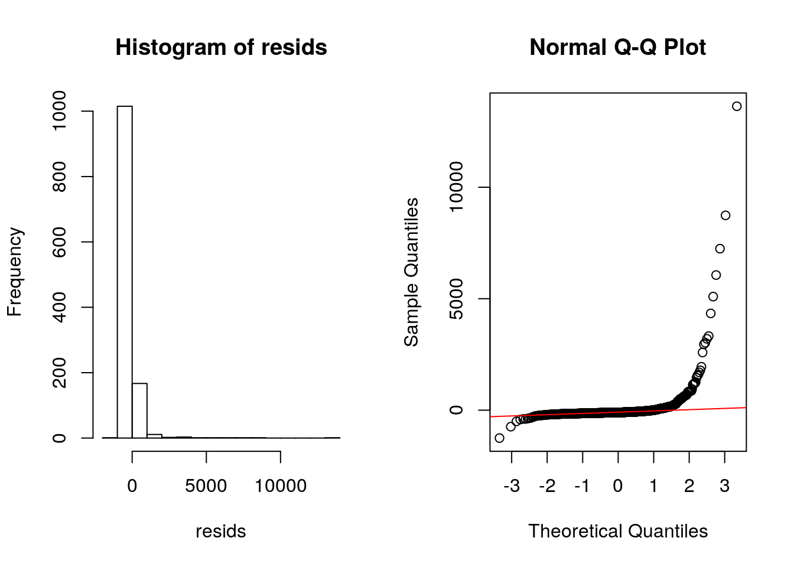
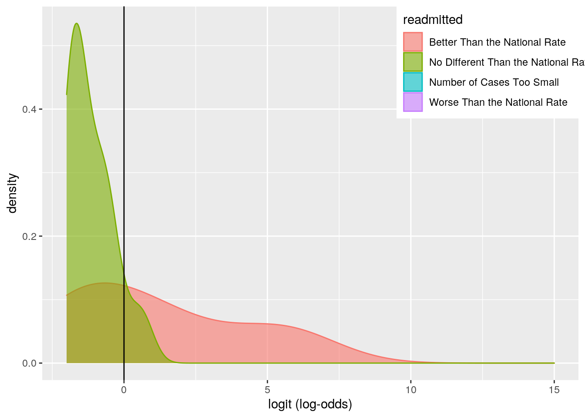
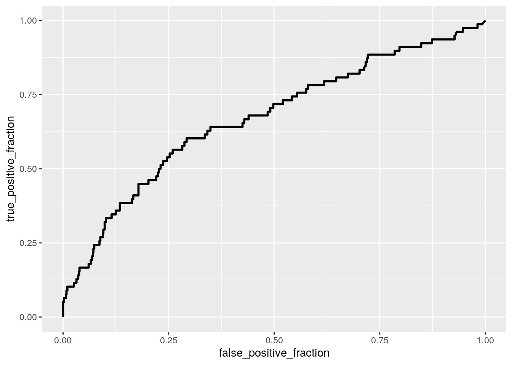
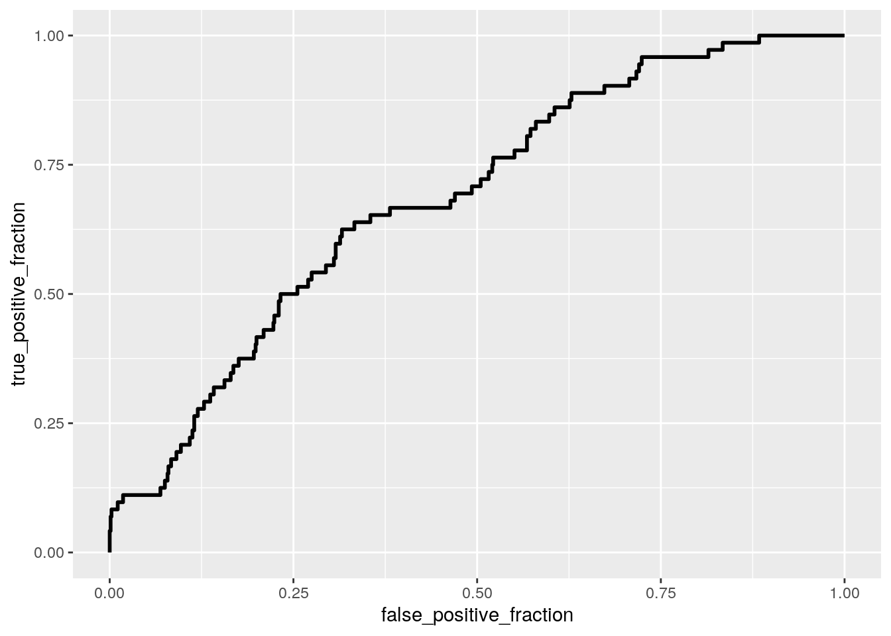
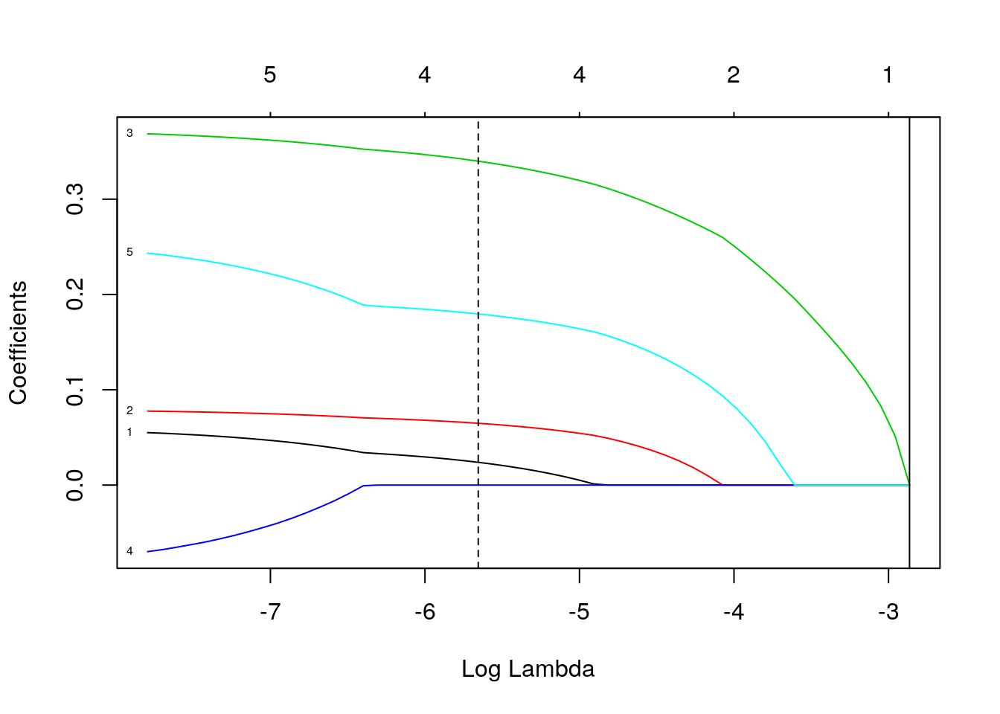

library(tidyverse)
library(ggplot2)
ipfacility <- read.csv("inpatientfacility.csv")This dataset is from the U.S. Department of Health & Human Services updated through October 29, 2020. There are 1,597 different facilities with 14 different variables. There are some descriptor variables such as Facility ID, Name, Address, City, State, Location, Zip.Code, etc. The numeric variables are hrs.of.phys.res (the total hours of physical restraint from the facility),total hours of seclusion for each facility (hrs.of.seclusion), the number of patients discharged from each facility on multiple antipsychotic medications (pts.dc.on.mult.antipsych), number of alcohol use interventions offerred at each facility (alc.use.intervention), and number of tobacco treatments offered at each facility (tobacco.tx). The "readmitted" variable is a categorical variable that assesses if the number of patients readmitted to another psychiatric hospital are readmitted after 30 days is no different than the national rate, worse than the national rate, better than the national rate, not available, or the numbers are too small to tell.
library(ggplot2)
library(dplyr)
library(gridExtra)
library(mvtnorm)
ipfac3 <- ipfacility2 %>% mutate_at(c(8:12), str_replace,
"Not Available", "NA")
ipfac4 <- ipfac3 %>% mutate_at(c("pts.dc.on.mult.antipsych",
"hrs.of.phys.rest", "hrs.of.seclusion", "tobacco.tx",
"alc.use.intervention"), as.numeric)
# manova
manova1 <- manova(cbind(pts.dc.on.mult.antipsych, hrs.of.phys.rest,
hrs.of.seclusion, tobacco.tx, alc.use.intervention) ~
readmitted, data = ipfac4)
summary(manova1)## Df Pillai approx F num Df den Df Pr(>F)
## readmitted 4 0.084542 3.852 20 3568 1.582e-08 ***
## Residuals 893
## ---
## Signif. codes: 0 '***' 0.001 '**' 0.01 '*' 0.05 '.' 0.1 ' ' 1# anovas
summary.aov(manova1)## Response pts.dc.on.mult.antipsych :
## Df Sum Sq Mean Sq F value Pr(>F)
## readmitted 4 22297 5574.3 1.8789 0.112
## Residuals 893 2649384 2966.8
##
## Response hrs.of.phys.rest :
## Df Sum Sq Mean Sq F value Pr(>F)
## readmitted 4 5375536 1343884 2.7796 0.02588 *
## Residuals 893 431755872 483489
## ---
## Signif. codes: 0 '***' 0.001 '**' 0.01 '*' 0.05 '.' 0.1 ' ' 1
##
## Response hrs.of.seclusion :
## Df Sum Sq Mean Sq F value Pr(>F)
## readmitted 4 17490258 4372565 10.404 3.073e-08 ***
## Residuals 893 375323517 420295
## ---
## Signif. codes: 0 '***' 0.001 '**' 0.01 '*' 0.05 '.' 0.1 ' ' 1
##
## Response tobacco.tx :
## Df Sum Sq Mean Sq F value Pr(>F)
## readmitted 4 1121377 280344 5.7667 0.0001389 ***
## Residuals 893 43412615 48614
## ---
## Signif. codes: 0 '***' 0.001 '**' 0.01 '*' 0.05 '.' 0.1 ' ' 1
##
## Response alc.use.intervention :
## Df Sum Sq Mean Sq F value Pr(>F)
## readmitted 4 303378 75845 4.2501 0.002058 **
## Residuals 893 15935933 17845
## ---
## Signif. codes: 0 '***' 0.001 '**' 0.01 '*' 0.05 '.' 0.1 ' ' 1
##
## 699 observations deleted due to missingnessipfac4 %>% group_by(readmitted) %>% summarize(mean(hrs.of.phys.rest,
na.rm = T), mean(hrs.of.seclusion, na.rm = T),
mean(pts.dc.on.mult.antipsych, na.rm = T), mean(alc.use.intervention,
na.rm = T), mean(tobacco.tx, na.rm = T))## # A tibble: 5 x 6
## readmitted `mean(hrs.of.ph… `mean(hrs.of.se… `mean(pts.dc.on… `mean(alc.use.i…
## <fct> <dbl> <dbl> <dbl> <dbl>
## 1 Better Th… 410. 649. 57.6 160.
## 2 No Differ… 116. 82.0 49.6 118.
## 3 Not Avail… 97.4 60.9 35.9 28.2
## 4 Number of… 423. 110. 47.8 67.8
## 5 Worse Tha… 201. 55.2 44.2 128.
## # … with 1 more variable: `mean(tobacco.tx, na.rm = T)` <dbl># posthoc
pairwise.t.test(ipfac4$hrs.of.phys.rest, ipfac4$readmitted,
p.adj = "none")##
## Pairwise comparisons using t tests with pooled SD
##
## data: ipfac4$hrs.of.phys.rest and ipfac4$readmitted
##
## Better Than the National Rate
## No Different Than the National Rate 3.7e-05
## Not Available 0.01051
## Number of Cases Too Small 0.90366
## Worse Than the National Rate 0.01933
## No Different Than the National Rate
## No Different Than the National Rate -
## Not Available 0.85448
## Number of Cases Too Small 0.00028
## Worse Than the National Rate 0.16548
## Not Available Number of Cases Too Small
## No Different Than the National Rate - -
## Not Available - -
## Number of Cases Too Small 0.01253 -
## Worse Than the National Rate 0.37377 0.02685
##
## P value adjustment method: nonepairwise.t.test(ipfac4$hrs.of.seclusion, ipfac4$readmitted,
p.adj = "none")##
## Pairwise comparisons using t tests with pooled SD
##
## data: ipfac4$hrs.of.seclusion and ipfac4$readmitted
##
## Better Than the National Rate
## No Different Than the National Rate < 2e-16
## Not Available 2.3e-07
## Number of Cases Too Small 5.5e-08
## Worse Than the National Rate 1.1e-12
## No Different Than the National Rate
## No Different Than the National Rate -
## Not Available 0.83
## Number of Cases Too Small 0.72
## Worse Than the National Rate 0.64
## Not Available Number of Cases Too Small
## No Different Than the National Rate - -
## Not Available - -
## Number of Cases Too Small 0.68 -
## Worse Than the National Rate 0.96 0.55
##
## P value adjustment method: nonepairwise.t.test(ipfac4$alc.use.intervention, ipfac4$readmitted,
p.adj = "none")##
## Pairwise comparisons using t tests with pooled SD
##
## data: ipfac4$alc.use.intervention and ipfac4$readmitted
##
## Better Than the National Rate
## No Different Than the National Rate 0.00164
## Not Available 0.00047
## Number of Cases Too Small 0.00029
## Worse Than the National Rate 0.04946
## No Different Than the National Rate
## No Different Than the National Rate -
## Not Available 0.01155
## Number of Cases Too Small 0.02383
## Worse Than the National Rate 0.43257
## Not Available Number of Cases Too Small
## No Different Than the National Rate - -
## Not Available - -
## Number of Cases Too Small 0.34399 -
## Worse Than the National Rate 0.00749 0.01514
##
## P value adjustment method: nonepairwise.t.test(ipfac4$tobacco.tx, ipfac4$readmitted,
p.adj = "none")##
## Pairwise comparisons using t tests with pooled SD
##
## data: ipfac4$tobacco.tx and ipfac4$readmitted
##
## Better Than the National Rate
## No Different Than the National Rate 0.00023
## Not Available 8.7e-05
## Number of Cases Too Small 6.2e-09
## Worse Than the National Rate 0.26512
## No Different Than the National Rate
## No Different Than the National Rate -
## Not Available 0.00637
## Number of Cases Too Small 1.4e-05
## Worse Than the National Rate 0.00692
## Not Available Number of Cases Too Small
## No Different Than the National Rate - -
## Not Available - -
## Number of Cases Too Small 0.77729 -
## Worse Than the National Rate 0.00050 1.4e-07
##
## P value adjustment method: none# assumptions
library(rstatix)
group <- ipfac4$readmitted
DVs <- ipfac4 %>% select(hrs.of.phys.rest, hrs.of.seclusion,
pts.dc.on.mult.antipsych, alc.use.intervention,
tobacco.tx)
# Test multivariate normality for each group (null:
# assumption met)
sapply(split(DVs, group), mshapiro_test)## Better Than the National Rate No Different Than the National Rate
## statistic 0.306355 0.2643933
## p.value 9.624783e-17 4.850885e-46
## Not Available Number of Cases Too Small Worse Than the National Rate
## statistic 0.6580003 0.5183071 0.1867738
## p.value 0.00330256 7.32537e-07 5.179296e-21# If any p<.05, stop (assumption violated). If not,
# test homogeneity of covariance matricesThis MANOVA tells us that at least one of the response variables shows a mean difference from the readmission rates variable since the F statistic is significant (less than .05). The univariate ANOVAs suggest that there is a mean difference for the hours of physical restraints, hours of seclusion, tobacco treatment, and alcohol intervention variables (so all but pts dc on mult antipsych) from the readmission rates. After the post-hoc analysis, there were 46 tests completed (1 MANOVA, 5 ANOVAs, and 40 t test - if we included Patients discharged on multpile antipsychotics it would have been 50 t tests but since it was not significant in the ANOVA there was no need to do a t test). Using Bonferronis correction the new value would be .00108696 for significance (.05/46). The probability of making at least one type one error is 0.905531755862 (1-.95^46). After using Bonferronis Correction, thec comparisons in the post-hoc tests were Number of Cases too Small and No Different than the national rate in hours of physical restraint (p=.00028), Better than the national rate when compared to all of the other readmission rates (no different, not avaliable, number of cases too small, worse) in hours of seclusion, Better than the national rate paired with Not Avaliable and Number of Cases too small in alcohol use and intervention offered (p=00047, p=.00029), and multiple pairings in the tobacco treatment variable (Better than National rate with NA, better than national with number of cases too small, no different than national with cases too small, better than national with no different than national, NA with worse and number of cases too small with worse than national). As for assumptions of the MANOVA, they were not met. When looking at a multivariate normality test, there was multiple p values less than .05 so the first assumption of multivariate normality was failed.
summary(aov(hrs.of.seclusion ~ readmitted, data = ipfac4))## Df Sum Sq Mean Sq F value Pr(>F)
## readmitted 4 31636071 7909018 19.07 2.55e-15 ***
## Residuals 1552 643824094 414835
## ---
## Signif. codes: 0 '***' 0.001 '**' 0.01 '*' 0.05 '.' 0.1 ' ' 1
## 40 observations deleted due to missingnesspairwise.t.test(ipfac4$hrs.of.seclusion, ipfac4$readmitted,
p.adj = "none")##
## Pairwise comparisons using t tests with pooled SD
##
## data: ipfac4$hrs.of.seclusion and ipfac4$readmitted
##
## Better Than the National Rate
## No Different Than the National Rate < 2e-16
## Not Available 2.3e-07
## Number of Cases Too Small 5.5e-08
## Worse Than the National Rate 1.1e-12
## No Different Than the National Rate
## No Different Than the National Rate -
## Not Available 0.83
## Number of Cases Too Small 0.72
## Worse Than the National Rate 0.64
## Not Available Number of Cases Too Small
## No Different Than the National Rate - -
## Not Available - -
## Number of Cases Too Small 0.68 -
## Worse Than the National Rate 0.96 0.55
##
## P value adjustment method: noneipfac4 %>% ggplot(aes(hrs.of.seclusion, readmitted,
color = readmitted)) + geom_point() This ANOVA is a randomization test that shows there is a significant mean difference in the different levels of readmission and hours of seclusion (The F statistic is well below .05). The null hypothesis is that there is not a significant difference in the means of hours of seclusion in the different readmitted conditions. The alternative hypothesis is that there is a significant mean difference between the two variables. In this ANOVA we reject the null hypothesis because the F statistic is less than .05 and therefore there is a significant difference in the means. The post-hoc t-test shows that there is a siginificant difference in the hours of seclusion means when the readmittied rate is better than the national average when compared to all of the other readmitted conditions.By the ggplot you can see that the hours of seclusion differ significantly in the "Better than the National Rate" compared to the other conditions supporting the ANOVA.
library(sandwich)
library(lmtest)
# center means
data.frame(alc.use.intervention_c = ipfac4$alc.use.intervention -
mean(ipfac4$alc.use.intervention, na.rm = T))## alc.use.intervention_c
## 1 21.5061125
## 2 -15.4938875
## 3 -39.4938875
## 4 110.5061125
## 5 -14.4938875
## 6 38.5061125
## 7 -73.4938875
## 8 -7.4938875
## 9 -22.4938875
## 10 -54.4938875
## 11 -39.4938875
## 12 -92.4938875
## 13 -104.4938875
## 14 145.5061125
## 15 -63.4938875
## 16 27.5061125
## 17 60.5061125
## 18 -51.4938875
## 19 73.5061125
## 20 -27.4938875
## 21 -53.4938875
## 22 NA
## 23 -58.4938875
## 24 172.5061125
## 25 -66.4938875
## 26 57.5061125
## 27 187.5061125
## 28 75.5061125
## 29 -26.4938875
## 30 NA
## 31 -34.4938875
## 32 3.5061125
## 33 -68.4938875
## 34 -105.4938875
## 35 -17.4938875
## 36 -65.4938875
## 37 -32.4938875
## 38 109.5061125
## 39 NA
## 40 -20.4938875
## 41 -104.4938875
## 42 -69.4938875
## 43 -87.4938875
## 44 NA
## 45 -52.4938875
## 46 -15.4938875
## 47 NA
## 48 -68.4938875
## 49 31.5061125
## 50 NA
## 51 23.5061125
## 52 -3.4938875
## 53 -100.4938875
## 54 NA
## 55 -68.4938875
## 56 -84.4938875
## 57 19.5061125
## 58 -77.4938875
## 59 -1.4938875
## 60 -103.4938875
## 61 15.5061125
## 62 -104.4938875
## 63 -67.4938875
## 64 -67.4938875
## 65 -5.4938875
## 66 130.5061125
## 67 NA
## 68 -30.4938875
## 69 NA
## 70 NA
## 71 NA
## 72 11.5061125
## 73 -58.4938875
## 74 -63.4938875
## 75 -54.4938875
## 76 -19.4938875
## 77 191.5061125
## 78 69.5061125
## 79 -72.4938875
## 80 76.5061125
## 81 -20.4938875
## 82 17.5061125
## 83 -1.4938875
## 84 -0.4938875
## 85 -84.4938875
## 86 -88.4938875
## 87 10.5061125
## 88 -25.4938875
## 89 16.5061125
## 90 NA
## 91 1.5061125
## 92 -67.4938875
## 93 -60.4938875
## 94 -50.4938875
## 95 116.5061125
## 96 -46.4938875
## 97 NA
## 98 13.5061125
## 99 -108.4938875
## 100 -92.4938875
## [ reached 'max' / getOption("max.print") -- omitted 1497 rows ]ipfac4$alc.use.intervention_c <- ipfac4$alc.use.intervention -
mean(ipfac4$alc.use.intervention, na.rm = T)
data.frame(tobacco.tx_c = ipfac4$tobacco.tx - mean(ipfac4$tobacco.tx,
na.rm = T))## tobacco.tx_c
## 1 -40.181754
## 2 12.818246
## 3 -103.181754
## 4 131.818246
## 5 -20.181754
## 6 137.818246
## 7 -152.181754
## 8 128.818246
## 9 -44.181754
## 10 -33.181754
## 11 6.818246
## 12 -94.181754
## 13 -171.181754
## 14 259.818246
## 15 -53.181754
## 16 -60.181754
## 17 -160.181754
## 18 41.818246
## 19 150.818246
## 20 38.818246
## 21 -24.181754
## 22 -214.181754
## 23 -124.181754
## 24 335.818246
## 25 30.818246
## 26 -28.181754
## 27 103.818246
## 28 23.818246
## 29 84.818246
## 30 NA
## 31 74.818246
## 32 -31.181754
## 33 -46.181754
## 34 -188.181754
## 35 28.818246
## 36 111.818246
## 37 38.818246
## 38 240.818246
## 39 -216.181754
## 40 -95.181754
## 41 -91.181754
## 42 -147.181754
## 43 -140.181754
## 44 -214.181754
## 45 -36.181754
## 46 37.818246
## 47 NA
## 48 -34.181754
## 49 78.818246
## 50 -85.181754
## 51 101.818246
## 52 -102.181754
## 53 36.818246
## 54 -216.181754
## 55 -125.181754
## 56 -151.181754
## 57 -25.181754
## 58 -82.181754
## 59 -9.181754
## 60 -154.181754
## 61 19.818246
## 62 -212.181754
## 63 -167.181754
## 64 -43.181754
## 65 -60.181754
## 66 41.818246
## 67 NA
## 68 38.818246
## 69 NA
## 70 -204.181754
## 71 NA
## 72 33.818246
## 73 -77.181754
## 74 -105.181754
## 75 100.818246
## 76 -74.181754
## 77 180.818246
## 78 147.818246
## 79 -152.181754
## 80 32.818246
## 81 76.818246
## 82 56.818246
## 83 110.818246
## 84 -49.181754
## 85 34.818246
## 86 -96.181754
## 87 -9.181754
## 88 -4.181754
## 89 80.818246
## 90 -154.181754
## 91 3.818246
## 92 -181.181754
## 93 78.818246
## 94 -72.181754
## 95 66.818246
## 96 -102.181754
## 97 -199.181754
## 98 168.818246
## 99 -185.181754
## 100 -125.181754
## [ reached 'max' / getOption("max.print") -- omitted 1497 rows ]ipfac4$tobacco.tx_c <- ipfac4$tobacco.tx - mean(ipfac4$tobacco.tx,
na.rm = T)
# interaction
lregminteraction <- lm(hrs.of.seclusion ~ tobacco.tx_c *
alc.use.intervention_c, data = ipfac4)
summary(lregminteraction)##
## Call:
## lm(formula = hrs.of.seclusion ~ tobacco.tx_c * alc.use.intervention_c,
## data = ipfac4)
##
## Residuals:
## Min 1Q Median 3Q Max
## -1250.6 -127.2 -102.6 -51.4 13631.5
##
## Coefficients:
## Estimate Std. Error t value Pr(>|t|)
## (Intercept) 1.132e+02 1.930e+01 5.864 5.82e-09 ***
## tobacco.tx_c 3.464e-01 1.431e-01 2.420 0.0157 *
## alc.use.intervention_c -5.451e-01 2.668e-01 -2.043 0.0413 *
## tobacco.tx_c:alc.use.intervention_c 3.974e-04 1.998e-04 1.989 0.0469 *
## ---
## Signif. codes: 0 '***' 0.001 '**' 0.01 '*' 0.05 '.' 0.1 ' ' 1
##
## Residual standard error: 645.1 on 1201 degrees of freedom
## (392 observations deleted due to missingness)
## Multiple R-squared: 0.01179, Adjusted R-squared: 0.009318
## F-statistic: 4.775 on 3 and 1201 DF, p-value: 0.002589library(interactions)
interact_plot(lregminteraction, pred = tobacco.tx_c,
modx = alc.use.intervention_c, plot.points = TRUE)
# assumptions
resids <- lregminteraction$residuals
fitvals <- lregminteraction$fitted.values
data.frame(resids, fitvals) %>% ggplot(aes(fitvals,
resids)) + geom_point() + geom_hline(yintercept = 0)
bptest(lregminteraction)##
## studentized Breusch-Pagan test
##
## data: lregminteraction
## BP = 0.71302, df = 3, p-value = 0.8701par(mfrow = c(1, 2))
hist(resids)
qqnorm(resids)
qqline(resids, col = "red")
ks.test(resids, "pnorm", sd = sd(resids))##
## One-sample Kolmogorov-Smirnov test
##
## data: resids
## D = 0.35375, p-value < 2.2e-16
## alternative hypothesis: two-sidedcoeftest(lregminteraction, vcov = vcovHC(lregminteraction))##
## t test of coefficients:
##
## Estimate Std. Error t value Pr(>|t|)
## (Intercept) 1.1319e+02 2.1434e+01 5.2808 1.526e-07
## tobacco.tx_c 3.4639e-01 2.9878e-01 1.1594 0.2465
## alc.use.intervention_c -5.4506e-01 3.9237e-01 -1.3891 0.1650
## tobacco.tx_c:alc.use.intervention_c 3.9736e-04 3.8485e-04 1.0325 0.3020
##
## (Intercept) ***
## tobacco.tx_c
## alc.use.intervention_c
## tobacco.tx_c:alc.use.intervention_c
## ---
## Signif. codes: 0 '***' 0.001 '**' 0.01 '*' 0.05 '.' 0.1 ' ' 1The linear regression model prediciting hours of seclusion from the interaction of alcohol and tobacco treatment being offered is seen above. The intercept estimate shows that the mean hours of seclusion is about 113.2 hours for facilities with average tobacco and alcohol treatments offered. Facilties with average alcohol treatments have predicted hours of seclusion that increases by .3464 with tobacco treatment offered more. Facilties with average tobacco treatment offerings have decreased hours of seclusion use (by -.5451) when alcohol treatment is offered more. When alcohol and tobacco treatment interact with each other the t is barely significant so they have a significant interaction with eachother on hours of seclusion, therefore an interaction plot was plotted (this is tested later for validity with robust standard errors). The assumption of homoskedasticity is met as seen in the bptest since you fail to reject the null hypothesis that the data is homoskedastic (p=.8701). The linearity assumption is met as seen in the resids vs fitvals plot. The normality assumption was not met as seen in the histogram of the residuals, the Q-Q Plot, and the ks.test p value was less than .05 so we reject the null that the data is normally distributed. After computing the regression with robust standard errors, none of the predictors were significant. The interaction of tobacco treatment and alcohol use intervention on predicting hours of seclusion is no longer significant (p=.3020). Additionally, tobacco and alcohol treatment individually are no longer significant predictors of hours of seclusion. The R-squared in the model is .01179 so the model can explain about 1.2% of the variation in the outcome (this is very low).
samp_distn <- replicate(5000, {
boot_dat <- boot_dat <- ipfac4[sample(nrow(ipfac4),
replace = TRUE), ]
fit2 <- lm(hrs.of.seclusion ~ tobacco.tx_c * alc.use.intervention_c,
data = boot_dat)
coef(fit2)
})
## Estimated SEs
samp_distn %>% t %>% as.data.frame %>% summarize_all(sd)## (Intercept) tobacco.tx_c alc.use.intervention_c
## 1 21.32532 0.2762287 0.3726998
## tobacco.tx_c:alc.use.intervention_c
## 1 0.0004080441The bootstrapped SEs for tobacco treatment was .27554, .375118 for alcohol treatment and .000406 for the interaction and the intercept SE was 21.6037. The original SEs are .1431 for tobacco treatment, .2668 for alcohol treatment, .0001998 for the interaction and the intercept SE was 19.3. The robust SEs were .29878 for tobacco treatment, .39237 for alcohol treatment, and .00038485 for the interaction and the intercept SE was 21.434. The bootstrapped SEs and robust SEs were much closer in value, and larger than the original SEs. That being said, you would still fail to reject the null hypothesis like when using the robust SEs (p would not be less than .05).
library(lmtest)
library(tidyverse)
data <- ipfac4 %>% select(pts.dc.on.mult.antipsych,
readmitted, hrs.of.phys.rest, hrs.of.seclusion) %>%
na.omit %>% mutate(y = ifelse(readmitted == "Better Than the National Rate",
1, 0))
fit3 <- glm(y ~ pts.dc.on.mult.antipsych + hrs.of.phys.rest +
hrs.of.seclusion, data = data, family = binomial(link = "logit"))
coeftest(fit3)##
## z test of coefficients:
##
## Estimate Std. Error z value Pr(>|z|)
## (Intercept) -2.6782e+00 1.3283e-01 -20.1629 < 2.2e-16 ***
## pts.dc.on.mult.antipsych 1.4848e-04 7.9638e-04 0.1864 0.8521006
## hrs.of.phys.rest 1.9245e-05 1.2040e-04 0.1598 0.8730134
## hrs.of.seclusion 6.2274e-04 1.8222e-04 3.4175 0.0006321 ***
## ---
## Signif. codes: 0 '***' 0.001 '**' 0.01 '*' 0.05 '.' 0.1 ' ' 1exp(coef(fit3))## (Intercept) pts.dc.on.mult.antipsych hrs.of.phys.rest
## 0.06868614 1.00014849 1.00001924
## hrs.of.seclusion
## 1.00062293# confusion matrix
probs <- predict(fit3, type = "response")
table(predict = as.numeric(probs > 0.5), truth = data$y) %>%
addmargins## truth
## predict 0 1 Sum
## 0 972 74 1046
## 1 2 4 6
## Sum 974 78 1052data$logit <- predict(fit3, type = "link")
# accuracy
(972 + 4)/1052## [1] 0.9277567# Sensitivity
4/78## [1] 0.05128205# Specificity
972/974## [1] 0.9979466# Precision
4/6## [1] 0.6666667# density plot
data %>% ggplot() + geom_density(aes(logit, color = readmitted,
fill = readmitted), alpha = 0.6) + theme(legend.position = c(0.85,
0.85)) + geom_vline(xintercept = 0) + xlab("logit (log-odds)") +
xlim(-2, 15)
geom_rug(aes(logit, color = readmitted))## mapping: x = ~logit, colour = ~readmitted
## geom_rug: outside = FALSE, sides = bl, length = 0.03, na.rm = FALSE
## stat_identity: na.rm = FALSE
## position_identitylibrary(plotROC)
ROCplot <- ggplot(data) + geom_roc(aes(d = y, m = probs),
n.cuts = 0)
ROCplot
calc_auc(ROCplot)## PANEL group AUC
## 1 1 -1 0.6695098The odds of a facility having better than the national rate readmission rates is -2.6782 when patients discharged on multiple antipsychotics, hours of seclusion, and hours of physical restraint are all 0. Controlling for patients discharged on multiple antipsychotics, hours of seclusion, and hours of physical restraint all have significantly lower odds of the facility having a better than the national average rate of readmission. Controlling for Hours of physical restraint and hours of seclusion, for every increase in patients being discharged on multiple antipsychotics, odds of the facility having a better than the national average rate of readmission after 30 days is .00014848 (not significant). Controlling for hours of seclusion and patients discharged on multiple antipsychotics, for every increase in hours of physical restraint, the odds of the facility having a better than average national rate of readmission increases by a factor of .00001925 (not significant). When controlling for patients discharged on multiple antipsychotics and hours of physical restraints, for every increase in the hour of seclusion, the odds of the facility in having a better than the national average rate of readmission (a lower rate of readmission) is .0006227 (significant). The accuracy is high, .92776, which is good because it represents the proportion of all cases tht were correctly classified (so 92.78% were correctly classified). The Sensitivity is .05128 which is low, which is the proportion of facilities with rates better than the average national rate which is bad - that is what we want to dummy distinguish from the others. The specificity is high,.9979, which is the proportion of rates that were lower than the "better than the national rate" category (0), which is good because that means that 99.79% of the "0s" were correctly classified. The precision value is the proportion of "better than the national rate" classified as "better than the national average" and that actually were. This value is .66667 so about 1/3 of the values were incorrect here which would be best if the precision was higher. The AUC value is .6695 which is poor and means there is a poor level of seperability - the model does not do well at distinguishing between the two classes. You can also see this in the ROC curve because it looks nearly linear hinting the AUC is going to be lower and that seperability is going to be poor.
data1 <- ipfac4 %>% select(pts.dc.on.mult.antipsych,
readmitted, hrs.of.phys.rest, hrs.of.seclusion,
alc.use.intervention, tobacco.tx) %>% na.omit %>%
mutate(y = ifelse(readmitted == "Better Than the National Rate",
1, 0))
fit5 <- glm(y ~ pts.dc.on.mult.antipsych + hrs.of.phys.rest +
hrs.of.seclusion + tobacco.tx + alc.use.intervention,
data = data1, family = binomial(link = "logit"))
coeftest(fit5)##
## z test of coefficients:
##
## Estimate Std. Error z value Pr(>|z|)
## (Intercept) -2.79695473 0.18891922 -14.8050 < 2.2e-16 ***
## pts.dc.on.mult.antipsych 0.00113107 0.00217033 0.5212 0.602260
## hrs.of.phys.rest 0.00011454 0.00012892 0.8885 0.374271
## hrs.of.seclusion 0.00056579 0.00018303 3.0912 0.001994 **
## tobacco.tx -0.00041947 0.00077978 -0.5379 0.590618
## alc.use.intervention 0.00194559 0.00112655 1.7270 0.084161 .
## ---
## Signif. codes: 0 '***' 0.001 '**' 0.01 '*' 0.05 '.' 0.1 ' ' 1exp(coef(fit5))## (Intercept) pts.dc.on.mult.antipsych hrs.of.phys.rest
## 0.06099553 1.00113171 1.00011455
## hrs.of.seclusion tobacco.tx alc.use.intervention
## 1.00056595 0.99958061 1.00194749data1$prob <- predict(fit5, type = "response")
table(predict = as.numeric(data1$prob > 0.5), truth = data1$y) %>%
addmargins## truth
## predict 0 1 Sum
## 0 824 66 890
## 1 2 6 8
## Sum 826 72 898# accuracy
(824 + 6)/898## [1] 0.9242762# sensitivity
mean(data1[data1$y == 1, ]$prob > 0.5)## [1] 0.08333333# specificity
mean(data1[data1$y == 0, ]$prob < 0.5)## [1] 0.9975787# precision
6/8## [1] 0.75# AUC
ROCplot <- ggplot(data1) + geom_roc(aes(d = y, m = prob),
n.cuts = 0)
ROCplot
calc_auc(ROCplot)## PANEL group AUC
## 1 1 -1 0.6838008The AUC calculated from the logisitc regression is poor (.6838008). The accuracy and specificty are high (in the 90 percentile) which is good. The sensitivity is low and the precision is .75. Therefore about 75% of the Better than the national average conditions were correctly classified. This means 1/4 of them were not so it would be best if this was higher. That would help with the AUC. In the logistic regression the overall test was significant (z was less than .05) so between all of the variables and readmission there is a significant effect. However, only hours of seclusion has significance on its own.
class_diag <- function(probs, truth) {
# CONFUSION MATRIX: CALCULATE ACCURACY, TPR, TNR,
# PPV
tab <- table(factor(probs > 0.5, levels = c("FALSE",
"TRUE")), truth)
acc = sum(diag(tab))/sum(tab)
sens = tab[2, 2]/colSums(tab)[2]
spec = tab[1, 1]/colSums(tab)[1]
ppv = tab[2, 2]/rowSums(tab)[2]
f1 = 2 * (sens * ppv)/(sens + ppv)
if (is.numeric(truth) == FALSE & is.logical(truth) ==
FALSE)
truth <- as.numeric(truth) - 1
# CALCULATE EXACT AUC
ord <- order(probs, decreasing = TRUE)
probs <- probs[ord]
truth <- truth[ord]
TPR = cumsum(truth)/max(1, sum(truth))
FPR = cumsum(!truth)/max(1, sum(!truth))
dup <- c(probs[-1] >= probs[-length(probs)], FALSE)
TPR <- c(0, TPR[!dup], 1)
FPR <- c(0, FPR[!dup], 1)
n <- length(TPR)
auc <- sum(((TPR[-1] + TPR[-n])/2) * (FPR[-1] -
FPR[-n]))
data.frame(acc, sens, spec, ppv, f1, auc)
}k = 10
data2 <- data1[sample(nrow(data1)), ]
folds <- cut(seq(1:nrow(data1)), breaks = k, labels = F)
diags <- NULL
for (i in 1:k) {
train <- data2[folds != i, ]
test <- data2[folds == i, ]
truth <- test$y
fit6 <- glm(y ~ pts.dc.on.mult.antipsych + hrs.of.phys.rest +
hrs.of.seclusion + tobacco.tx + alc.use.intervention,
data = train, family = "binomial")
probss <- predict(fit6, newdata = test, type = "response")
diags <- rbind(diags, class_diag(probss, truth))
}
summarize_all(diags, mean)## acc sens spec ppv f1 auc
## 1 0.9209988 0.06190476 0.9976744 NaN NaN 0.6672232This AUC is lower in the 10 fold CV regression which makes sense because sometimes logistic regressions with many variables that are complex can over fit. However the AUC did not decrease by much. The accuracy, specificity and sensitivity are also all slightly smaller in this model are lower than the in sample metrics. However, it is not by lot.
RNGkind(sample.kind = "Rejection")
library(glmnet)
data3 <- ipfac4 %>% select(pts.dc.on.mult.antipsych,
readmitted, hrs.of.phys.rest, hrs.of.seclusion,
alc.use.intervention, tobacco.tx) %>% na.omit %>%
mutate(y = ifelse(readmitted == "Better Than the National Rate",
1, 0))
y <- as.matrix(data3$y) #grab response
x <- model.matrix(y ~ pts.dc.on.mult.antipsych + hrs.of.phys.rest +
hrs.of.seclusion + tobacco.tx + alc.use.intervention,
data = data3)[, -1] #predictors (drop intercept)
x <- scale(x)
head(x)## pts.dc.on.mult.antipsych hrs.of.phys.rest hrs.of.seclusion tobacco.tx
## 1 -0.0896577 -0.2304340 -0.2140482 -0.4024634
## 2 -0.5843870 -0.2125996 -0.2140482 -0.1646007
## 3 0.1485453 -0.1275386 -0.2122650 -0.6852058
## 4 -0.6393569 -0.2119263 -0.2014302 0.3694683
## 5 -0.5110938 -0.2288439 -0.2140482 -0.3127039
## 6 -0.6210336 -0.1476363 -0.2140482 0.3963961
## alc.use.intervention
## 1 0.1170434
## 2 -0.1579449
## 3 -0.3363156
## 4 0.7785016
## 5 -0.1505127
## 6 0.2433894cv <- cv.glmnet(x, y, family = "binomial")
{
plot(cv$glmnet.fit, "lambda", label = TRUE)
abline(v = log(cv$lambda.1se))
abline(v = log(cv$lambda.min), lty = 2)
}
lasso <- glmnet(x, y, family = "binomial", lambda = cv$lambda.1se)
coef(lasso)## 6 x 1 sparse Matrix of class "dgCMatrix"
## s0
## (Intercept) -2.439929e+00
## pts.dc.on.mult.antipsych .
## hrs.of.phys.rest .
## hrs.of.seclusion 9.413959e-17
## tobacco.tx .
## alc.use.intervention .After the LASSO, the only variable the is retained is hours in seclusion.
k = 10
data2 <- data1[sample(nrow(data1)), ]
folds <- cut(seq(1:nrow(data1)), breaks = k, labels = F)
diags <- NULL
for (i in 1:k) {
train <- data2[folds != i, ]
test <- data2[folds == i, ]
truth <- test$y
fit8 <- glm(y ~ hrs.of.seclusion, data = train,
family = "binomial")
probss <- predict(fit8, newdata = test, type = "response")
diags <- rbind(diags, class_diag(probss, truth))
}
summarize_all(diags, mean)## acc sens spec ppv f1 auc
## 1 0.9221348 0.05 0.9986842 NaN NaN 0.6609562After doing another 10 fold CV with only the hours of seclusion value, you see the AUC decrease again, which can account for the overfitting that occurs in complex models but the value is still poor. The sensitiviy is very low, and lowered more compared to both of the models above. The accuracy adn specificity are still high in this model and relatiively close to the two models above.